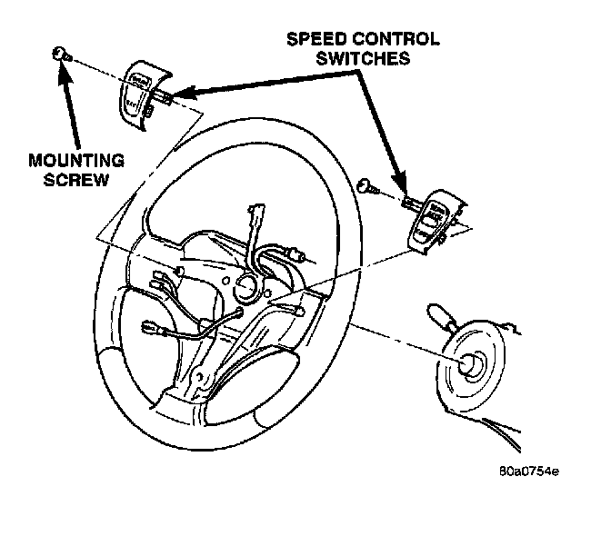

Cruise Control Switch: Service and Repair
REMOVALWARNING: BEFORE BEGINNING ANY AIRBAG SYSTEM COMPONENT REMOVAL OR INSTALLATION, REMOVE AND ISOLATE THE NEGATIVE (-) CABLE FROM THE BATTERY. THIS IS THE ONLY SURE WAY TO DISABLE THE AIRBAG SYSTEM. THEN WAIT TWO MINUTES FOR SYSTEM CAPACITOR TO DISCHARGE BEFORE FURTHER SYSTEM SERVICE. FAILURE TO DO THIS COULD RESULT IN ACCIDENTAL AIRBAG DEPLOYMENT AND POSSIBLE INJURY.
1. Disconnect and isolate negative battery cable.
2. Remove airbag module.
3. Remove electrical connector at switch.

4. Remove switch-to-steering wheel mounting screw.
5. Remove switch.
INSTALLATION
1. Install switch and mounting screw.
2. Tighten screw to 1.5 N.m (15 in.lbs.) torque.
3. Install electrical connector to switch.
4. install airbag module.
5. Connect negative battery cable.